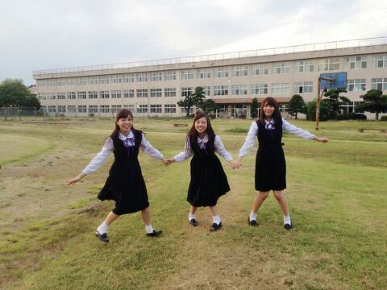
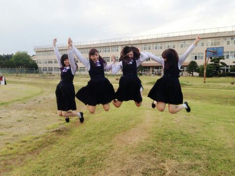
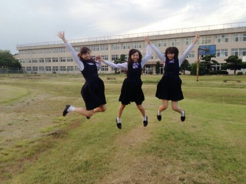

こんにちわ〜..*
10th目の制作も終わり CDのジャケット写真も発表されまして、、 ってことでジャ写撮り終わってから メンバーとピョーンとしてみました。
せーーーのっ!!!!!!

ぴょーーーーーん。
・ ・ ・ ・ ・ ・

あれ？ 一人増えたで。
制服も 仕事の時しか着ません。
だから、制服を着るとつい 青春をしたくなります*^^*
どう？ 楽しそうですかね♪？笑
あっ！ あと昨日全員揃う お仕事だったんだけど、、
ななみんが元気になっていて安心しました(*^^*)
それと〜 最近22歳になった まいやん姉さん。。
早くお蕎麦食べにいこうよ〜 笑
・・・・

またね〜(*^O^*)